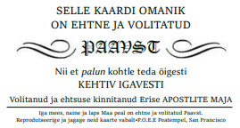

Tervist ja olgu tervitatud Discordia!
Siia saidile kogun huvitavamaid infokilde ja allikaid teatud teemadel, muuhulgas selliseid, mida võib-olla ei oska uuesti leida või otsida. Ülevaatlikult on võimalik tutvuda nende teemade ja ideedega, kui alustada nt. sisukaardilt. Täiendan lehte ebaregulaarselt. Tagasisidet või soovitusi lehe kujunduse, sisu või millegi muu osas saab anda siin.
Leht loodud 28/06/2019
Mõned üldallikad ja sarnased veebilehed
...aitab ehk põhjalikumalt uurida-otsida enamikke teemasid, kui muudest linkidest väheseks jääb.
Mõned üldallikad ja sarnased veebilehed
- Sacred-texts - Müstika, okultismi, filosoofia, paranormaalsete tekstide arhiiv
- Metaphysicspririt - Suur raamatute arhiiv kõikidel alternatiivteemadel
- Isitreallyflat - Palju lamemaa teemalisi jm esoteerilisi materjale ning e-raamatuid
- Nextexx - Artiklid: teadus, anomaaliad, vandenõud, vt. ka väike nimekiri sarnastest veebilehtedest
- Crystalinks
- Educate-Yourself - teemad vist peaaegu kõige kohta
- Rex Research - Kogutud kasulik ja haruldasem info: Teadus, tehnoloogia, praktilised teemad
- Occult World - maagia, mütoloogia, salaseltsid jm
- et.greatplainsparanormal.com - alternatiivne maailmavaade, anomaaliad, ajalugu, vandenõud jm
- Mysterypile - Alternatiivajalugu, paranormaalsed nähtused, asukohad, krüptiidid, müstika
- TruthseekerTV
- What On Earth Is Happening - Okultismiuurija Mark Passio videod. Vt ka Youtubes ja 1TB+ suurune andmevaramu Google Drive'is
- The CrowHouse Community
- The Invisible Academy - aastani 2011 aktiivne foorum politiikast, ühiskonnast, okultismist
- Human Development Library
- Rogue Valley Metaphysical Library - raamatukogu, audioraamatud, loengud
- In5D - vahel on kasulikku nt Schumanni resonantsi kohta.
- LondonReal.tv | Brian Rose
- Eesti alternatiivmeedialehed, -uudised, lingid
- Para web foorum
- Maatriks - kunagine Tallinna TV saade
- Reaalsusloome grupp
- Terve Elu Telepilt: [Youtubes], [Videod Facebookis] - Raivo Orgusaare kogutud teadmised
- Vanad slaavi tarkused, alternatiivajalugu, -meditsiin, maagia, vandenõud: